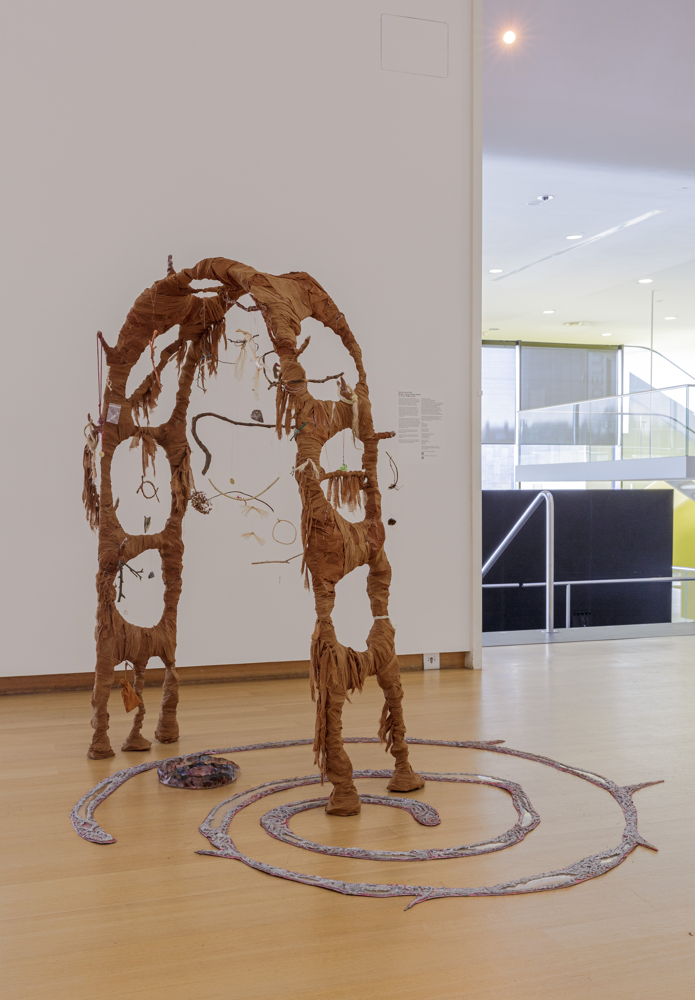
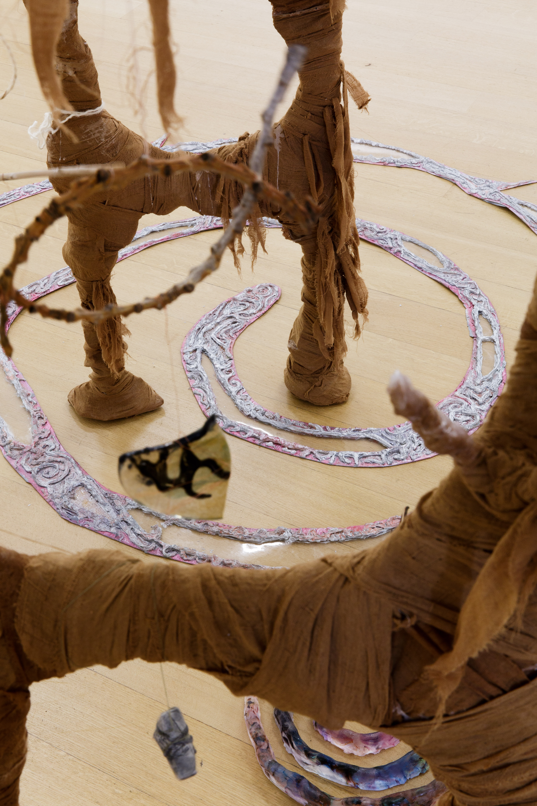
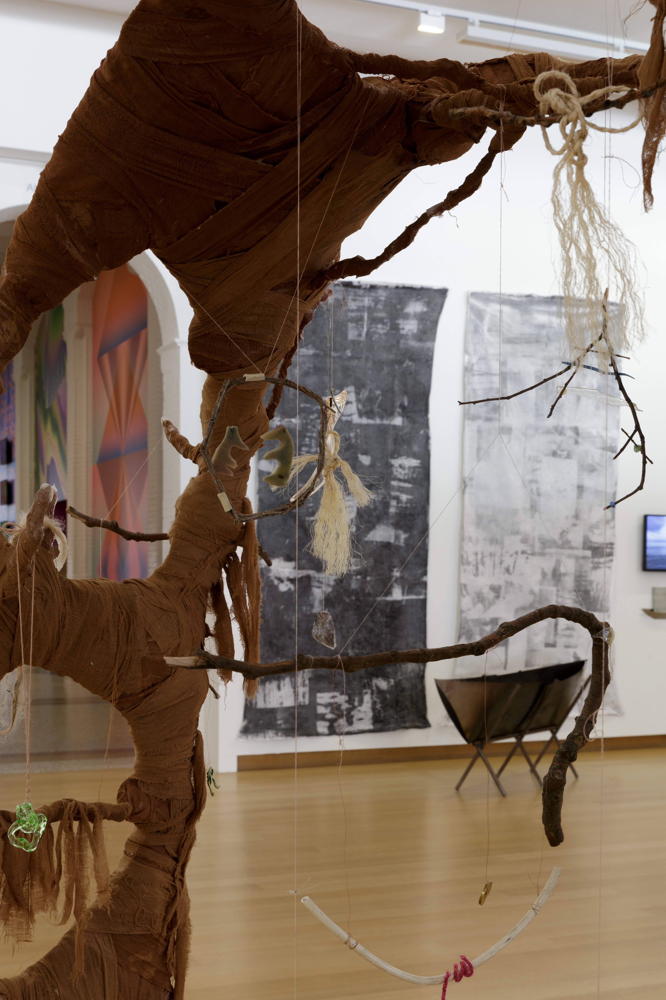

The Gate of The Strange and The Spiral of The Known 2023. Stedelijk Museum.
What you are looking at is the creation of a spiritual refuge.
One that is not built on the gendered binaries of the Divine Feminine and the Divine Masculine, that dominates the neo spiritual
practices of today. Instead, I call upon the powers of The Strange and The Known, in order to create a place for queer magik and
rituals. The Known is the spiral, an ancient human symbol that appears all around in nature and in our own bodies. The Strange is
symbolized by a gateway, a divider of spaces known and spaces hidden. Passing through it provides the possibility of change.
Made from glass, plastic, duct tape, wood, thread, found and hand-dyed yarn, moon water, ceremonial birch smoke, silicone,
blessed salt, the energy of the Strange, the energy of the Known, copper wire, lacquer varnish, oil paint, gauze, clay, steel and hope.
380 cm x 320 cm x 182 cm.


The Gate of The Strange and The Spiral of The Known 2023. Stedelijk Museum.